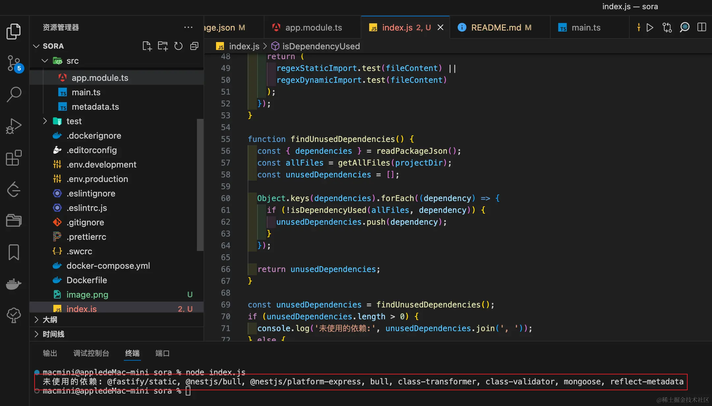
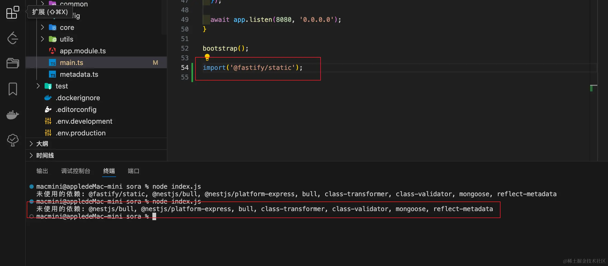

随着前端项目中使用的依赖包越来越多，而其中一部分依赖包可能并未被项目所使用，手动查找这些依赖包既耗时又繁琐。未使用的依赖包会增加项目的大小，这可能会导致下载和安装你的应用所需的时间更长。并且在构建项目时，构建工具需要处理所有的依赖包。未使用的依赖包可能会不必要地增加构建时间，特别是在大型项目中。
Depcheck 是一款用于分析项目中依赖关系的工具，它可以帮助我们找出以下问题：在 package.json 中，每个依赖包如何被使用、哪些依赖包没有用处、哪些依赖包缺失。它是解决前端项目中依赖包清理问题的一个常用工具。
接下来的内容中，我们不是使用这个库，而是自己编写一个脚本来实现我们想要的功能。它主要的步骤被划分为：
最终代码如下所示：
const fs = require("fs");
const path = require("path");
const projectDir = path.resolve("."); // 当前项目目录
const excludeDirs = ["node_modules", ".git"]; // 应该排除的目录
// 读取并解析package.json
function readPackageJson() {
const packageJsonPath = path.join(projectDir, "package.json");
if (!fs.existsSync(packageJsonPath)) {
console.error("package.json not found.");
process.exit(1);
}
return JSON.parse(fs.readFileSync(packageJsonPath, "utf8"));
}
// 递归遍历目录获取所有文件路径
function getAllFiles(dirPath, arrayOfFiles) {
const files = fs.readdirSync(dirPath);
arrayOfFiles = arrayOfFiles || [];
files.forEach(function (file) {
if (fs.statSync(dirPath + "/" + file).isDirectory()) {
if (!excludeDirs.includes(file)) {
arrayOfFiles = getAllFiles(dirPath + "/" + file, arrayOfFiles);
}
} else {
arrayOfFiles.push(path.join(dirPath, "/", file));
}
});
return arrayOfFiles;
}
// 检查依赖是否在文件中被引用，包括动态引用
function isDependencyUsed(files, dependency) {
const regexStaticImport = new RegExp(
`require\\(['"\`]${dependency}['"\`]|from ['"\`]${dependency}['"\`]`,
"i"
);
const regexDynamicImport = new RegExp(
`import\\(['"\`]${dependency}['"\`]\\)`,
"i"
);
return files.some((file) => {
const fileContent = fs.readFileSync(file, "utf8");
return (
regexStaticImport.test(fileContent) ||
regexDynamicImport.test(fileContent)
);
});
}
function findUnusedDependencies() {
const { dependencies } = readPackageJson();
const allFiles = getAllFiles(projectDir);
const unusedDependencies = [];
Object.keys(dependencies).forEach((dependency) => {
if (!isDependencyUsed(allFiles, dependency)) {
unusedDependencies.push(dependency);
}
});
return unusedDependencies;
}
const unusedDependencies = findUnusedDependencies();
if (unusedDependencies.length > 0) {
console.log("未使用的依赖:", unusedDependencies.join(", "));
} else {
console.log("所有依赖都已使用。");
}
运行上面的代码我们可以获取到哪些依赖包是没有被使用到的。
在上面的两个正则中，它的作用如下：
require('dependency')。import something from 'dependency'。import() 语法的使用，例如：import('dependency')。这两个正则表达式的目的是为了在文件中找到对指定依赖的引用，无论这些引用是静态的还是动态的。
接下来我们执行一下代码，最终输出结果如下图所示：
这里我们可以查看到哪些内容是没有被使用到的，紧接着，我们可以再添加一行代码进行测试：
你可以看到，当我们添加了一个动态包导入之后，@fastify/static 被从未使用的依赖中移除掉了。